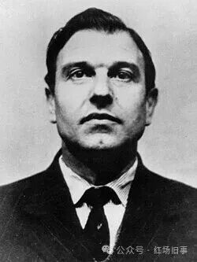
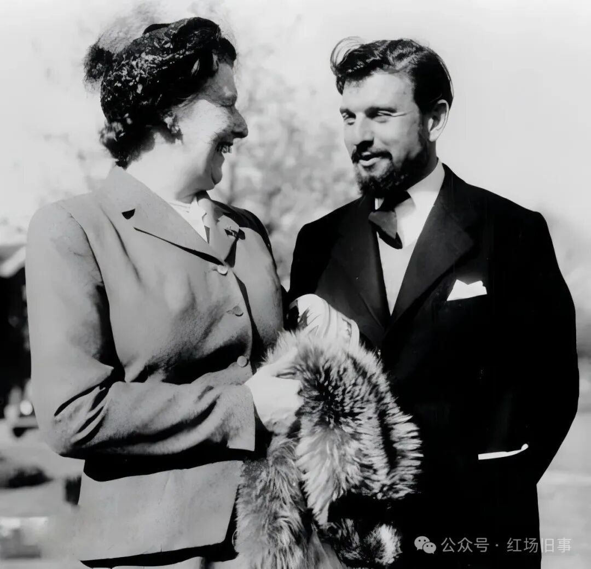
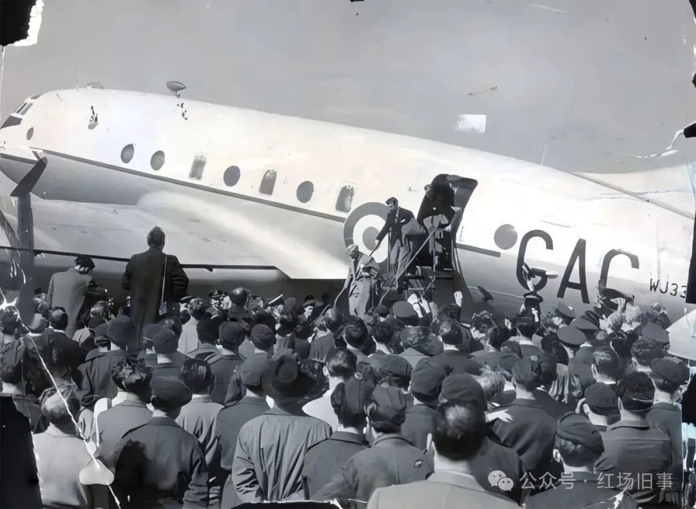
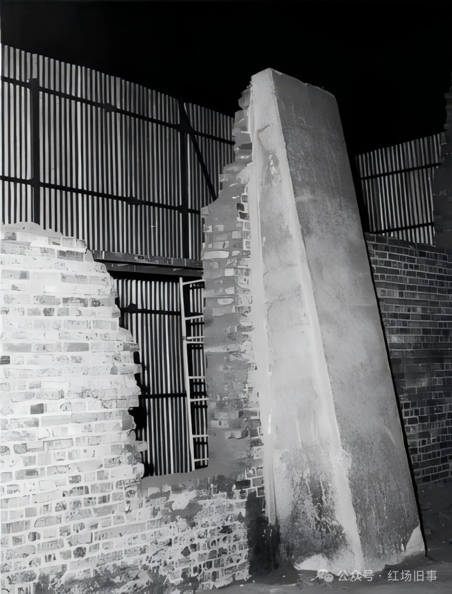
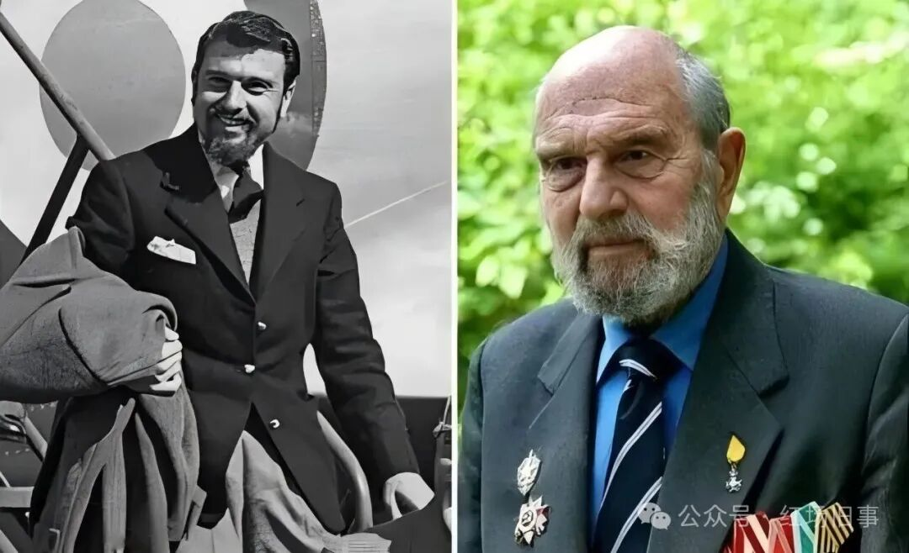
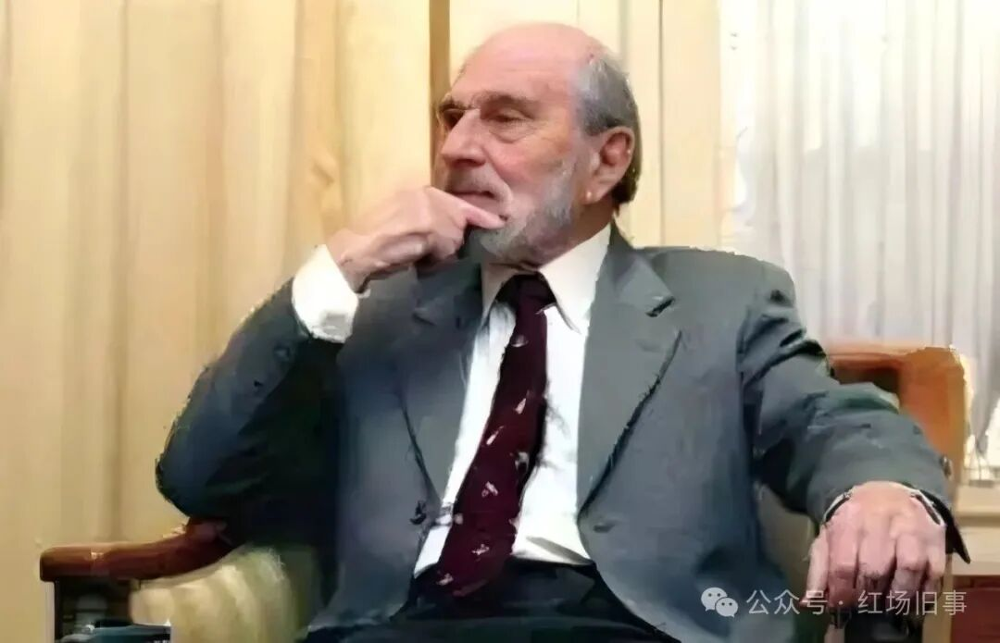
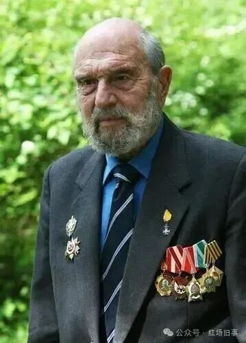

第11期 从CIA反苏负责人到克格勃顶级间谍：艾姆斯的双面人生
楔子：1961年伦敦，那个熟悉的房间他走进这间办公室时，没想过会以这种方式回来。卡尔顿花园3号，军情六处总部。优雅的乔治亚式建筑，铺着深色地毯的走廊，连空气里的味道都没变。他在这里开过无数次会，签过无数份文件，也在这里，亲手把英美耗资数亿的“柏林隧道”计划送给了苏联人。1961年4月的一天，他接到通知：回伦敦述职。他叫乔治·布莱克，39岁，英国军情六处高级特工，正在黎巴嫩进修阿拉伯语。同事们羡慕他——这是要提拔的信号。

乔治·布莱克但当他一脚踏进那间熟悉的会议室，看见坐在桌边的三个人时，他知道，一切都结束了。审讯持续了整整一周，他扛了七天，第七天晚上，他崩溃了。“是的，我是苏联间谍。”房间里一片死寂。审讯官之一后来回忆：那一刻，我们所有人都像被雷劈了一样。
一、朝鲜战俘营里的信仰转变
布莱克的故事，要从朝鲜说起。1922年，他出生在荷兰鹿特丹，父亲是犹太人，母亲是荷兰人。二战爆发后，他参加抵抗运动，1943年逃到英国，加入海军，后来被军情六处招募。1948年，他被派往汉城（韩国•首尔），公开身份是英国副领事，任务是收集苏联远东地区情报。

乔治·布莱克和她母亲
1950年6月，朝鲜战争爆发。朝鲜人民军攻陷汉城，布莱克和其他外交官一起被俘。接下来三年，他在战俘营里看到了这辈子最难忘的画面：美军轰炸机每天从头顶飞过，炸弹落在平民区，村庄化为火海，尸体横在路边。他在2017年发布的声明里回忆：“看到美国军事机器屠杀平民，我意识到，这类冲突对整个人类致命且危险。我因而作出一生中最重要的决定——自愿与苏联情报机构合作。”1951年春，他通过朝鲜军官向苏联大使馆递了一张纸条。双方见面后，他把自己知道的英国情报全盘托出。1953年，《朝鲜停战协议》签署，布莱克获释回国。

1953年 包括布莱克在内的英国战俘回到伦敦
军情六处对他做了忠诚度测试，他通过了。没人想到，这个刚从战俘营回来的男人，已经彻底换了立场。
二、柏林隧道：一场从一开始就注定失败的戏
1955年，布莱克被派到冷战的最前沿——柏林。这是他双面间谍生涯的巅峰。当时英美正在策划一项绝密行动：从西柏林挖一条450米长的地道，直通东柏林地下，窃听苏联的军事通信电缆。这条地道后来被称为“柏林隧道”，是冷战时期最雄心勃勃的窃听计划。1955年第一次策划会议，布莱克作为秘书参会，负责记录会议纪要。这份纪要，当天晚上就送到了克格勃手里。苏联人面临一个两难选择：如果立即摧毁隧道，布莱克就暴露了；如果放任不管，就要付出长达一年多的通信被窃听的代价。他们选择了保护布莱克。接下来的11个月，苏联人眼睁睁看着英美特工在地道里忙活，听着自己的通信被窃听，还得假装不知道。他们把假情报喂给这条隧道，让英美误以为收获巨大。1956年4月，苏联“突然发现”这条隧道，召开发布会猛烈抨击英美。伦敦和华盛顿一脸懵逼——他们以为这是技术失误，直到多年后才明白：从一开始，这就是一场被人操控的戏。
三、落网：一个波兰叛徒的“赠礼”
布莱克的暴露，源于一个波兰人。1961年，波兰情报局高级官员迈克尔·戈伦涅夫斯基叛逃美国。作为“见面礼”，他交出一份名单——上面是潜伏在西方各国的苏联间谍。名单上有一个代号“Sniper”的人，特征描述指向军情六处内部。军情六处开始内部排查。他们很快锁定布莱克：他曾在朝鲜被俘，正好在1951年苏联人开始获得核心情报的时间点上。审讯在卡尔顿花园3号那间会议室进行——就是布莱克当年记录柏林隧道会议的地方。审讯官问他柏林隧道的细节，他的回答出现明显矛盾。七天之后，审讯官抛出戈列涅夫斯基的告密细节与柏林站泄密时间线，布莱克心理防线崩溃，主动认罪，承认自 1951年起为克格勃工作。1961年5月，布莱克被判处42年监禁。这是英国废除死刑以来最长的刑期。法官在宣判时说：“你犯下的罪行，严重到无法用语言形容。”他被关进伦敦西区的沃姆伍德·斯克拉比斯监狱，编号2546。
四、越狱：三个狱友和一副绳梯
1966年10月22日，星期六，晚上6点。监狱里的犯人都在看电视。布莱克悄悄离开座位，走进牢房。他撬开窗户栏杆，沿着窗台滑到地面，跑到监狱东北角的围墙边。

布莱克越狱的洞口
墙外，三个男人在等他。一个叫肖恩·伯克，爱尔兰人，因邮寄炸弹给警察被判7年，在狱中与布莱克成为好友，提前出狱后负责接应。另外两个叫迈克尔·兰德尔和帕特·波特，反核和平主义者，在狱中短暂关押时认识了布莱克，视他为“政治犯”。伯克从墙外扔进一副用编织针做的绳梯。布莱克抓住梯子，三下两下翻过6米高的围墙，跳进等在外面的汽车。接下来三个月，他藏在伦敦各处朋友家。12月，兰德尔开着自家房车，载着妻子和孩子，把布莱克藏在后座下面，开车穿过轮渡，进入比利时，再进入西德。1966年圣诞节前，布莱克越过边境，进入东德。几周后，他出现在莫斯科红场上。

英国政府炸了锅。内政大臣在下议院被骂得抬不起头。《每日快报》头版标题：“我国最危险的叛徒，就这样逃了？”
五、莫斯科余生：英雄与叛徒的一体两面
布莱克在莫斯科被授予克格勃上校军衔，住进一套公寓，后来搬到郊外木屋。他娶了苏联女子艾达，生了一个儿子，取名米哈伊尔。1990年，他出版自传《别无选择》。书名概括了他对自己一生的解释：不是主动选择，而是别无选择。

2006年11月在莫斯科
2007年，普京亲自给他颁发“友谊勋章”，表彰他对苏联情报工作的贡献。但另一边，英国人对他的恨从未消退。他出卖了多少人？英国官方说至少42名特工因他暴露后被处决。他自己在1990年接受BBC采访时说：“我估计有500多名西方特工因我暴露，但否认其中42人因我而死。”数字有争议，但没人质疑他的“破坏力”超过剑桥五杰。2020年12月26日，乔治·布莱克在莫斯科去世，享年98岁。葬在莫斯科特罗耶库罗夫公墓，军事荣誉，长眠异乡。

那个让军情六处恨了60年的男人，终于安静了。俄罗斯对外情报局发表声明：“这个传奇人物的光辉记忆将永远留在世人心中。”英国媒体标题只有四个字：“叛徒死了。”
尾声：他从未属于谁
布莱克在自传里写过一段话，或许是对自己一生最好的注解：“要想背叛，首先必须从属，而我从未属于谁。”他不是英国人。生在荷兰，父亲是犹太人，母亲是荷兰人。他为英国工作，却为苏联卖命。他背叛的那个国家，从来没给过他归属感。2012年，他90岁生日时接受采访，记者问他后悔吗。他笑了：“我把生命献给了一个崇高的理想，这有什么可后悔的？”从鹿特丹到伦敦，从汉城到莫斯科，从战俘营到克格勃上校——这个男人的一生，比任何谍战片都离奇。他用42年刑期换来了后半生的自由，用500多人换来了苏联人一句“英雄”。乔治·布莱克是冷战时期最具破坏力的双面间谍之一。他在朝鲜战俘营里转变立场，用余生为苏联工作。 冷知识——乔治·布莱克的叔叔是埃及共产党的创始人之一：亨利·库里尔。布莱克13-16岁在开罗与库里尔朝夕相处生活3年，为他埋下了共产主义的种子。你认为，布莱克背叛的根本原因是什么？欢迎在评论区分享你的想法。下期预告 科伦·莫洛迪：克格勃最会赚钱的“非法”间谍他是克格勃最会赚钱的“非法”间谍——没有官方掩护，被抓就是死刑。他在伦敦开公司卖电唱机，差一点被女王册封爵士。自掏腰包买情报，每年倒贴总部钱。暴露他的不是叛徒，而是一张童年割包皮的手术记录。下期，我们一起走进一个靠做生意当上间谍的人，最后如何栽在一张手术记录上。第10期 25年潜伏，出卖1500名特工，让克格勃全球情报网瘫痪，CIA的“宝石间谍”第13期 波利亚科夫递上的投名状里，玛丽亚•格伦的名字排第几？